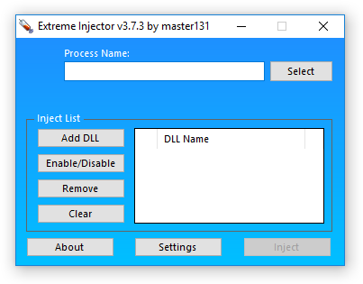
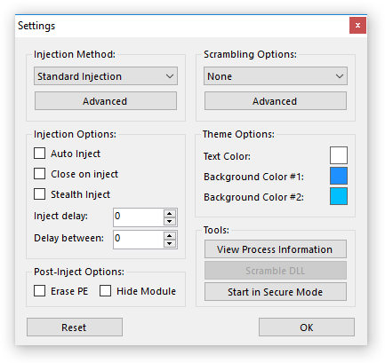
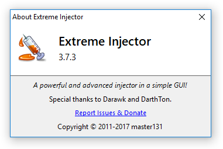

extreme injector 进程注入工具使用
windows dll 注入是大部分游戏辅助的实现方式，这次来介绍使用最广泛的extreme injector
简介
extreme injector 是一个非常强大和高级的dll注入工具，配有一个简单的GUI界面，使用c#编写   
它具有以下特性:
- 多种外观和允许自定义GUI
- 进程列表选择或者桌面程序选择
- 多dll注入支持（并支持enable/disable选择）
- 自动开启注入
- 隐藏注入行为
- dll抢占式注入
- 取消dll注入
- 多种注入方法（Standard, LdrLoadDll Stub, LdrpLoadDll Stub, Thread Hijacking and Manual Map）
- 支持拖拽操作
- 支持x64平台
- Visual C++依赖库自动安装
- 注册后导出导出的功能函数
如何使用
- 下载并解压文件(github下载地址)
- 运行Injector v3.exe
- 点击设置(setting)来开启选项 Start in Secure Mode 来避免被反欺诈引擎识别
- 点击select按钮来选择要注入的进程,可以选择正在运行的进程或者桌面中可执行文件的名字(以exe扩展)
- 点击inject完成